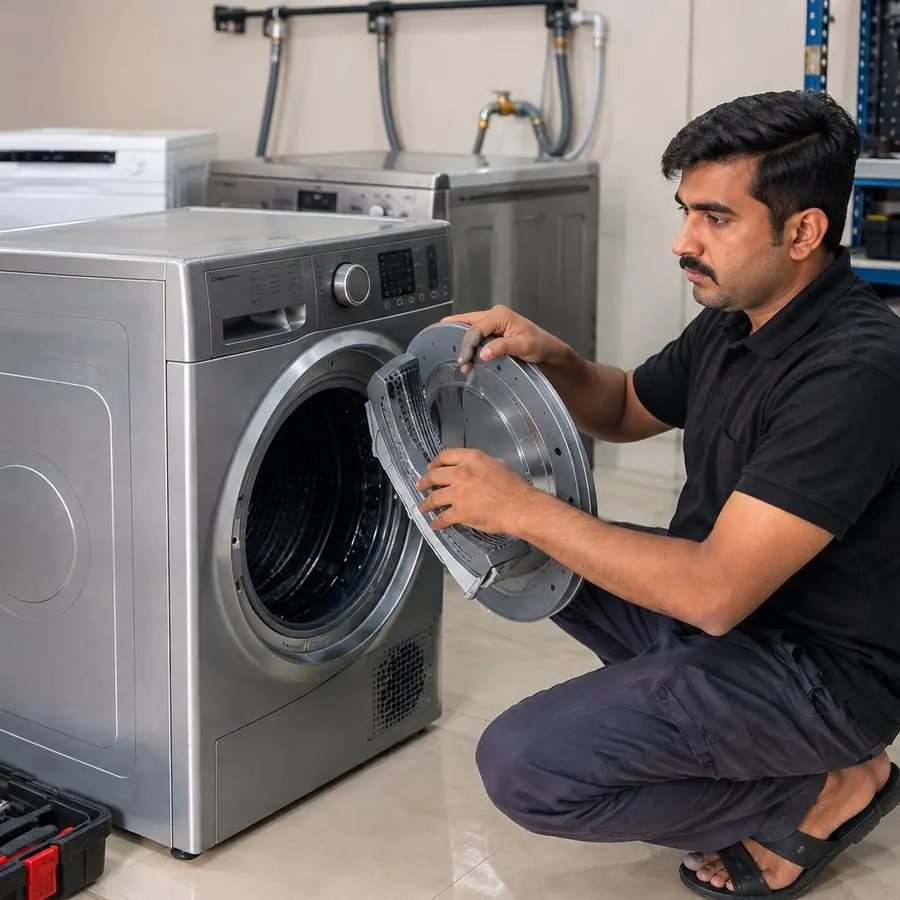

صيانة غسالات ميديا في الرياض
غسالة ميديا تسرب الماء أو تتوقف في منتصف البرنامج أو تصدر صوتا عاليا؟ نصلحها في بيتك بالرياض، وتعرف العطل والتكلفة قبل أن نبدأ.
نشر بواسطة إصلاح الغسالات الأوتوماتيكية · آخر تحديث: نوفمبر 2026
هذه الصفحة جزء من دليلنا لـ صيانة غسالات اتوماتيك في الرياض.

أعطال ميديا الشائعة وما تدل عليه غالبا
تبيع ميديا غسالات بفتحة أمامية وأخرى علوية، وهي مستخدمة في بيوت كثيرة بالرياض. وهذا جدول سريع يوضح ما يدل عليه العرَض غالبا، وهو ليس تشخيصا نهائيا. فالفني يؤكد السبب الحقيقي في بيتك.
| ما تلاحظه | يدل غالبا على |
|---|---|
| الماء يبقى في الحوض | فلتر تصريف أو خرطوم أو مضخة مسدودة |
| الباب لا يفتح بعد انتهاء البرنامج | قفل الباب، أو ماء ما زال في الحوض |
| تعبئة بطيئة أو بلا تعبئة | صنبور مغلق، أو فلتر دخول مسدود، أو صمام الدخول |
| الحوض يضرب أو يتحرك على الأرض | حمولة غير متوازنة، أو أرضية غير مستوية، أو مساعدات اهتزاز متآكلة |
| ماء تحت الغسالة | جوان الباب أو وصلة الخرطوم أو المضخة |
| أزرار لا تستجيب أو برنامج يعيد نفسه | بوردة التحكم أو فيش مرتخي |
مضخة التصريف والفلتر
في أغلب غسالات ميديا الأمامية فلتر تصريف صغير خلف غطاء قرب أسفل الواجهة. تتجمع فيه الوبر والعملات ومشابك الشعر. وعندما ينسد قد تصرف الغسالة ببطء أو تتوقف والماء داخلها أو تظهر إنذارا للتصريف.
وتنظيفه ليس آمنا دائما بيدك، لأن الماء يندفع منه. وإن جربت فافصل الغسالة عن الكهرباء أولا وضع صينية تحتها. وإذا بقي الماء ولم يخرج فقد تكون المضخة تعطلت. اقرأ أكثر عن الغسالة لا تصرف الماء.
قفل الباب وجوان الباب
قفل الباب يبقيه مغلقا أثناء دوران الحوض ووجود الماء. فإذا تآكل القفل أو انثنى اللسان، فقد ترفض الغسالة العمل، أو يبقى الباب مقفلا بعد البرنامج. لا تجبر الباب على الفتح ولا تتجاوز القفل أبدا.
والجوان الممزق أو المليء بالعفن قد يسرب من الأمام. وترك الباب مفتوحا قليلا بعد الغسيل يساعده على الجفاف. وفي مقالنا عن الباب الذي لا يفتح ما يمكن تجربته بأمان.
الصوت واختلال التوازن وبوردة التحكم
اختلال التوازن شائع عندما تتكتل قطعة ثقيلة مثل بطانية مبللة في جهة واحدة. فتهتز الغسالة، وبعض الموديلات تتوقف وتعرض تنبيها. وزّع الملابس من جديد قبل أن تظن أن هناك عطلا. وإذا استمر الصوت مع حمولة عادية فقد تكون البلوف أو مساعدات الاهتزاز متآكلة. راجع أسباب الصوت والاهتزاز.
والإلكترونيات قد تتعطل أيضا. وعطل البوردة قد يبدو توقفا عشوائيا أو أزرارا ميتة أو برنامجا لا ينتهي. راجع دليل جهازك لمعنى أي رمز، فالمعاني تختلف من موديل إلى آخر.
جهّز هذه المعلومات قبل الاتصال
الاتصال والواتساب على +966 59 116 1916. وكلما زادت التفاصيل صار الفني أكثر استعدادا.
- رقم موديل ميديا، وغالبا على ملصق في الخلف أو قرب إطار الباب.
- أمامية أو علوية.
- العطل بالتحديد ومتى بدأ.
- أي رمز على الشاشة. اقرأه كما هو واطلع على دليل الجهاز أيضا.
كيف تتم الزيارة
يأتيك فني إلى بيتك في الرياض، ويحدد العطل، ويخبرك بالتكلفة قبل أن يلمس شيئا. ولا يبدأ العمل إلا بموافقتك. والإصلاح عليه ضمان 30 يوما على القطع والعمل، وتقييمنا 4.8 على جوجل من 264 تقييما. ولسلامتك افصل الغسالة عن الكهرباء وأغلق الصنبور قبل الزيارة.
إمدادات الماء والخراطيم وفلتر الدخول
ليست كل الأعطال داخل الغسالة. فإذا كانت ميديا تعبئ ببطء أو تشتكي الشاشة من الماء، فتأكد من الصنبور أولا. تحقق من أنه مفتوح بالكامل وأن خرطوم التغذية غير مثني. وفي كثير من الغسالات فلتر شبكي صغير عند وصلة الخرطوم، وقد تسده الرواسب. وهذا أكثر شيوعا عندما يحمل الماء أتربة دقيقة.
وإذا أردت فحصه فأغلق الصنبور وافصل الجهاز عن الكهرباء أولا، وتوقع خروج قليل من الماء. وإذا بقي التدفق ضعيفا بعد ذلك فقد يكون صمام الدخول يتعطل، ويستطيع الفني اختباره. راجع أيضا الماء العسر والغسالات.
وإن وجدت بقعة رطبة عند وصلة الخرطوم بالصنبور فلا تشد الوصلة بقوة مفرطة. فقد يتلف الجوان الصغير داخلها. أغلق الماء واطلب منا الفحص.
خدمة مستقلة وليست مركز ميديا الخاص
نحن خدمة صيانة مستقلة، ولسنا مركز خدمة ميديا الرسمي ولا وكيلا معتمدا. وإذا كانت غسالتك جديدة وما زالت تحت الضمان فتواصل أولا مع البائع أو الشركة.
الأسئلة الشائعة
الرموز تختلف بين الموديلات، فراجع دليل الجهاز. ثم أخبرنا بالموديل والرمز بالضبط ونشرح لك ما يدل عليه غالبا.
غالبا نعم، لكن سيخرج منه ماء. افصل الجهاز وأغلق الصنبور واستخدم صينية. وإن لم تكن متأكدا فاطلب منا ذلك.
لا. التسريب يأتي أيضا من الخراطيم ومنطقة درج المنظف والمضخة. وموضع البلل يعطي إشارة، لكن الفني يتأكد.
نعم. أخبرنا بنوع غسالتك ونرتب الزيارة على هذا الأساس.
اطلب فحص غسالة ميديا
أرسل الموديل ووصف العطل. اتصل أو راسلنا واتساب على +966 59 116 1916 ونحجز لك زيارة في بيتك بالرياض.